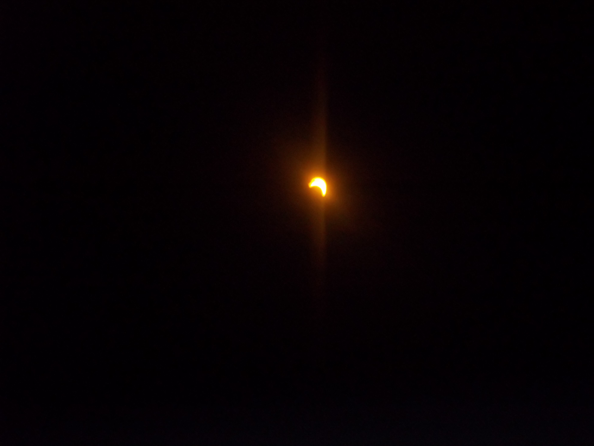
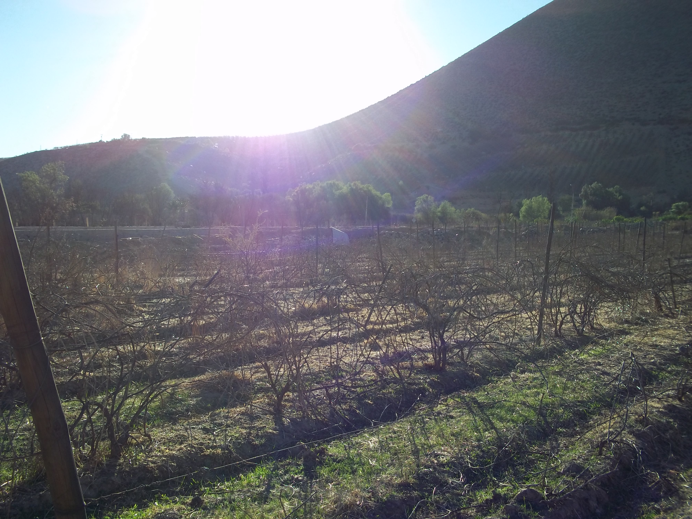
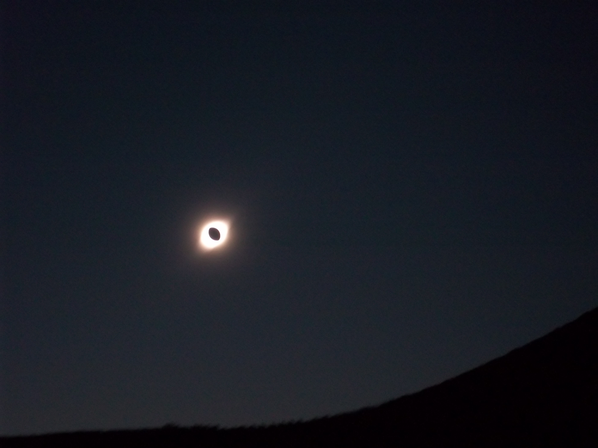

May 10, 1994
Type of eclipse: Annular
Viewed from: I dont actualy remeber seeing it but I remeber making a eclipse viewer in my kindergarden class at Poinsettia Elemetary in Ventura California


Type of eclipse: Annular
Viewed from: I dont actualy remeber seeing it but I remeber making a eclipse viewer in my kindergarden class at Poinsettia Elemetary in Ventura California
Type of eclipse: Annular
Viewed from: Foot Bridge in the Westside KCMO


Type of eclipse: Total
Viewed from: Baseball feild somewhere in Central Missouri
Type of eclipse: Total
Viewed from: Grape feild in the Elqui Valley of Chile
 